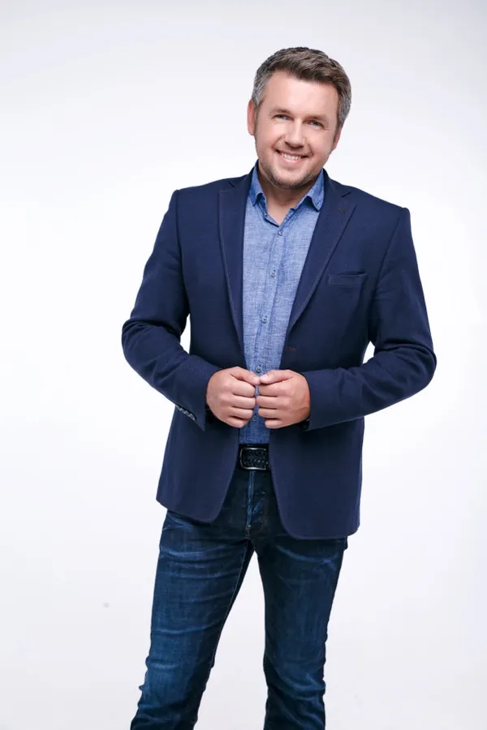

Хто веде
Разом з тобою на цьому шляху

Дмитро Карпачов
Психоаналітичний коуч
- Автор методу «Психоаналітичний Коучинг» — одного з найефективніших сучасних підходів до особистісних трансформацій та досягнення цілей
- Експерт з питань дитячої вікової психології
- Автор бестселера «Як дати все дитині без грошей і зв'язків»
- Створив найбільшу в Україні онлайн-школу для батьків, яка існує вже більше 10 років
- Автор більш ніж 60 освітніх програм з виховання дітей і особистого розвитку
- Більше 20 років досвіду психологічних консультацій
- Телезірка. Ведучий 6 соціально-психологічних реаліті-шоу на національному телебаченні

Ірина Макаренко
Авторка програми Breakup Rehab
- Магістр психології (Ун-т ім. Тараса Шевченка)
- Психоаналітичний коуч (ПАК)
- Практикуючий психолог
- 2000+ годин консультацій у темі розставань та особистісних трансформацій
1 млн+
в Instagram
955K+
у Facebook
615K+
на YouTube
тисячі
випускників курсів